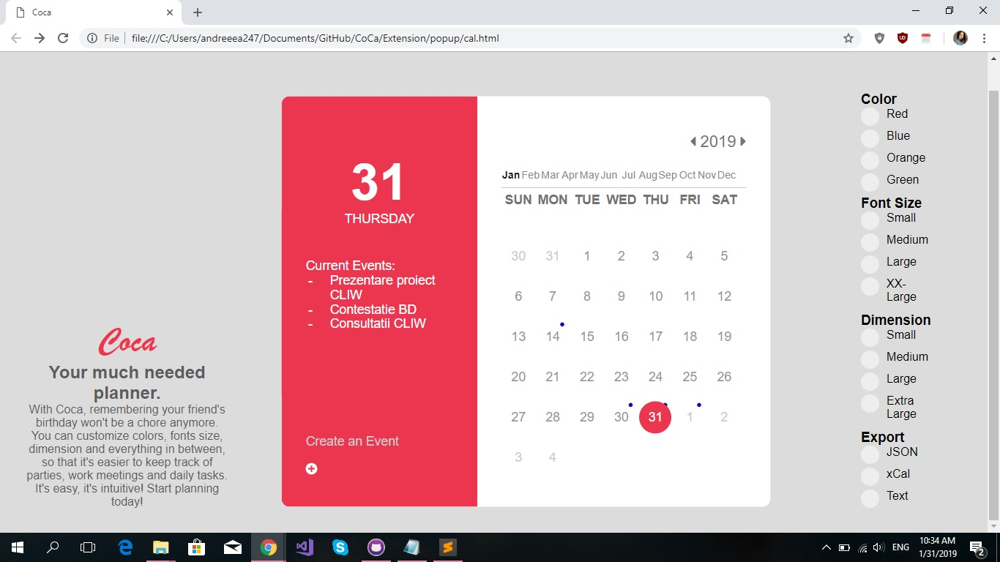

Coca COOL Calendar
The Future of the Smart Calendars
The Future of the Smart Calendars
This paper is meant to provide an useful guide on how to properly use this application, as well as some background information about which technologies we used, and the reason we chose them.
The idea behind this project is to create a web extension in form of a calendar, that should be suited for any HTML document.
This application should posses the following features: it should be easily customizable by the user, it should be able to take over data provided by Google Calendar, and it should notify the user about the current/ future events.
Now, let's have a deeper look at the aforementionted features.
The user should be able to control things like colour scheme, font size and overall dimension, so that the experience is as pleasurable as it can be. They can do such thing by using the menu, where all of these options are listed.
The user should be able to request exporting data in any format that is according to the iCalendar standard. The iCalendar standard is an open standard for exchanging calendar and scheduling information between users and computers. This thing is possible through the Export button.
The purpose of this widget isn't to be a calendar per se, but a scheduler. Therefore, it must be able to store the dates and the events that are relevant for the user, in a friendly and intuitive way. Also, it should notify the user about the events that are due on a current day.
In order to achieve this, we are going to use the Notification API, which is used to configure and display desktop notifications to the user.

This is our prototype about how the event manager should work.
Using the Google Calendar API lets us integrate our app with Google Calendar. This will allow us to display, create and modify calendar events as well as work with many other calendar-related objects.
It has predefined methods such as delete, get, insert that really simply our work.
Inside our application, we need to store data such as user's color preference, or an event. Since our project is a client-side application, we won't rely on a server database. What we will do, is use JavaScript APIs that will allow us to store data on the client (on the user's machine) and the retrieve it when needed.
One way to do this is by using cookies. Since the early days of the web, sites have used cookies to store information to personalize user experience on websites. However, they are outdated and rather problematic, so we won't use them.
What we chose to do is using the Web Storage Api, which provides mechanisms by which browsers can store key/value pairs, in a much more intuitive fashion than using cookies.
Search engines, web crawlers, and browsers can extract and process Microdata from a web page and use it to provide a richer browsing experience for users. Search engines benefit greatly from direct access to this structured data because it allows them to understand the information on web pages and provide more relevant results to users.
Date and time is amongst the most difficult data for machines to understand, and our application is based precisely on that. To make dates unambiguous, use the time tag along with the datetime attribute. The value of the datetime attribute is the date specified using YYYY-MM-DD format. Here's an example of using microdata extracted from our code
During the first stage, we set up our prototype, as well as our main goals for the project. We also created the presentation page for our application.
Here you can see our first prototipe:

Within this stage we developed a stronger idea about how our application will behave. We built the project's architecture, and we also started to work at the final widget form.
For the final stage we have the last look of our application and the functions for it were implemented. Now a user can add a event into the calendar, can navigate thru years and months, can change the color, font size and the size of the actual calendar, and also the user will be able to export the events saved into 3 formats: JSON, Simple Text and xCal.
The manifest.json file is the only file that every extension using WebExtension APIs must contain.
Using manifest.json, we specify basic metadata about our extension such as the name and version, and can also specify aspects of our extension's functionality, such as background scripts, content scripts, and browser actions.
The key 'permisions' enables extensions to request extra permissions at runtime, after they have been installed.
If an extension has the activeTab permission, then when the user interacts with the extension, the extension is granted extra privileges for the active tab only.
Use the sessions API to list, and restore, tabs and windows that have been closed while the browser has been running.
Enables extensions to store and retrieve data, and listen for changes to stored items.
Display notifications to the user, using the underlying operating system's notification mechanism.
For the final stage we still have to implement the functionalities for this project.